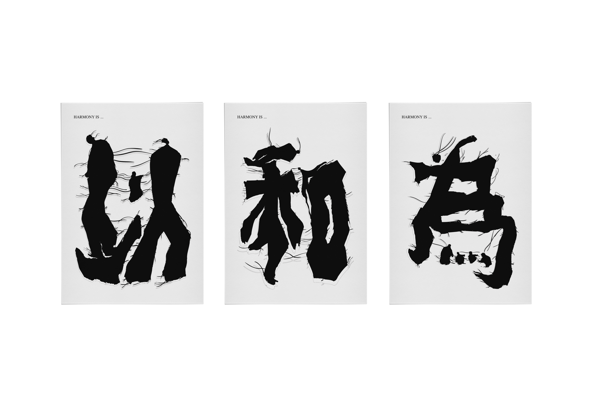

HarmonyIs...
A three-poster series that reconsiders the traditional expression “Yi He Wei Gui” by separating its meaning into fragments, movements and an intentional absence.

Concept
“Yi He Wei Gui” (“Harmony is to be valued”) is a widely known traditional expression that emphasizes the importance of harmony. In this work, the three characters “Yi,” “He,” and “Wei” are separated across three posters, while the final character, “Gui,” is left as an intentional blank space.
The forms of the characters incorporate traces of human movement, while the lines represent the trajectories of relationships in which people meet, drift apart, and reconnect. The absence of “Gui” is not a negation, but a deliberate space that invites viewers to draw on their own experiences and imagine an alternative answer.
By opening up a phrase whose meaning has long been fixed, this work raises the question once again: What does “harmony” truly mean?
Selected – Exhibition Only
JAGDA International Student Poster Award
2026